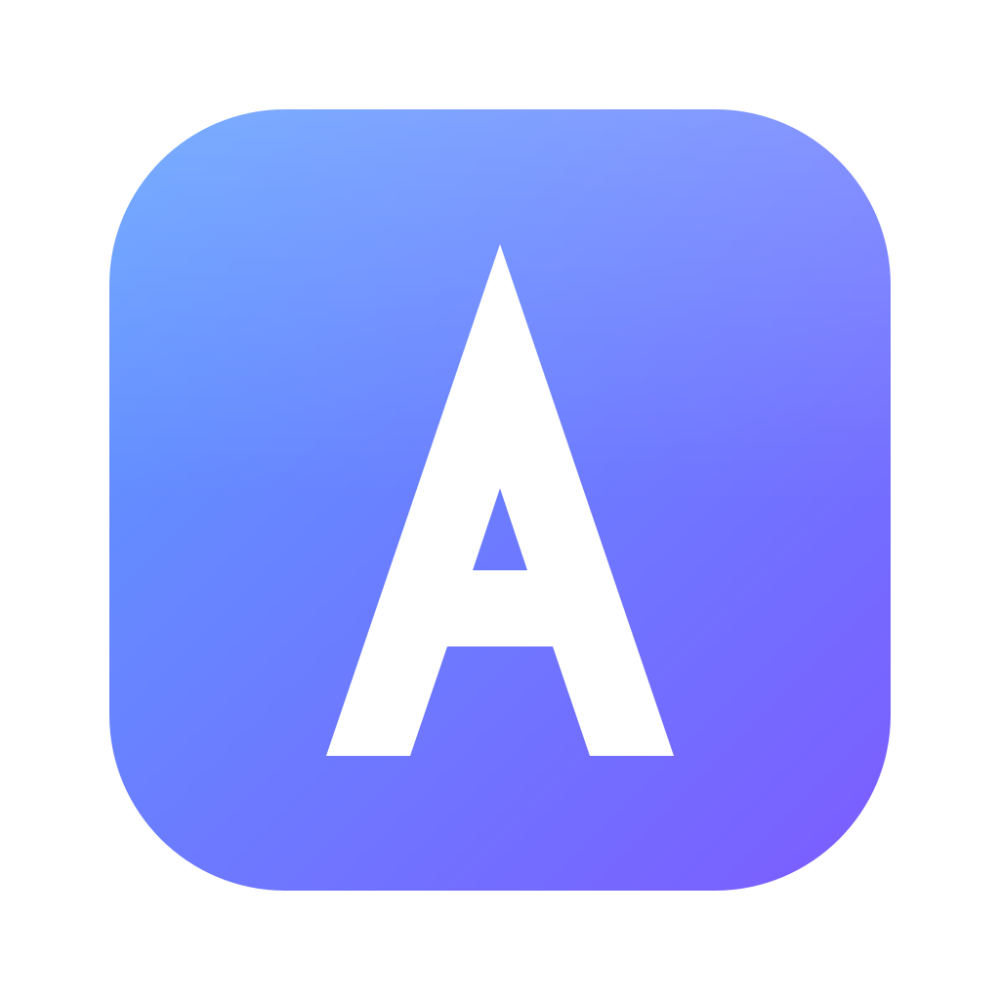
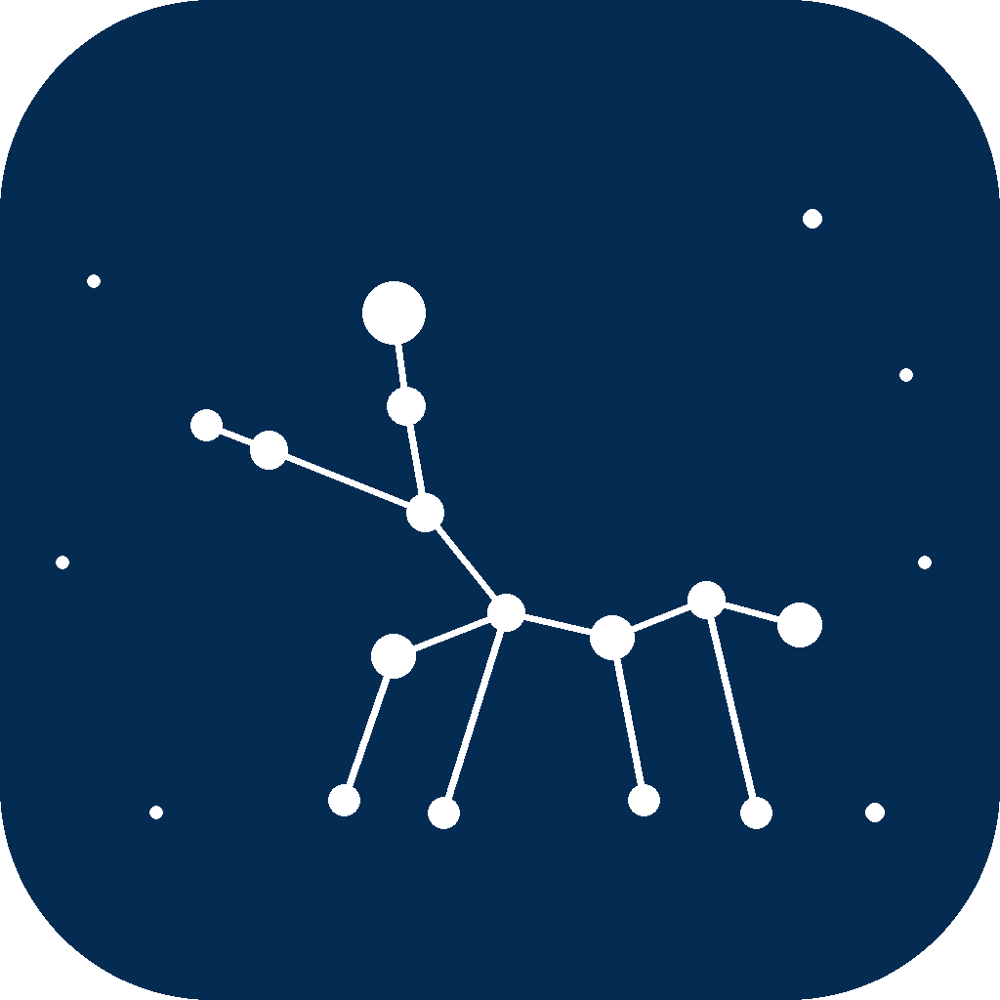

I build tools, languages, and worlds.
Hi, I'm Ondrej. I make software from the ground up — a browser for viewing code output, my own programming language, and mods that reshape Minecraft. Here's what I've been working on.

Atlas
A calm browser for serious programmers — run .chi/.py, edit code,
and keep every project in its own tab group.

Chiron
My own programming language — a block-and-symbol syntax with functions, objects, loops, imports and async, run by a Python interpreter.
🧱Minecraft Mods
Mods that add new content and mechanics to Minecraft. A growing collection — built with Fabric/Forge.
I like building things that other people can build with — developer tools, a language of my own, and mods that give players new ways to play. This site is my home base; it grows as I ship more.